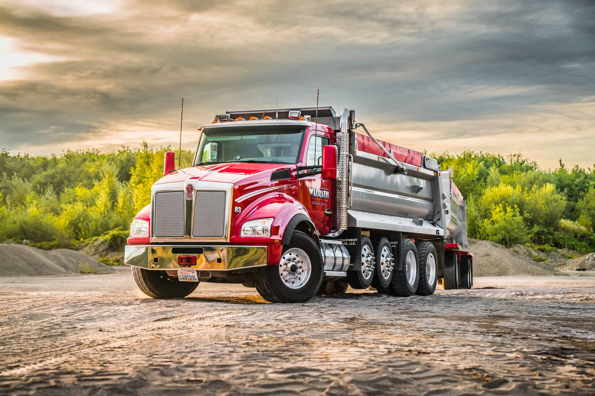

Over 50 years of excellence
Family owned and operated since 1968.
Tom Sr. operated a single truck for almost 20 years, with his wife Marlene taking care of all the book work for the company. Then in May of 1987, Tom Jr. officially started driving a truck alongside his dad. Tom Sr. and Marlene are happily retired and Tom Jr. runs the company, but is always happy to hop into a truck if the need arises.
1968
The first truck
Tom Walrath Sr. becomes an owner/operator with the purchase of a 1963 Peterbilt log truck.
1987
Second generation
In May, Tom Jr. officially starts driving a truck alongside his dad while Marlene continues to maintain the books.
2000
Landscape Supply — Tacoma
Walrath Landscape Supply begins serving the Tacoma community.
2014–2023
Gig Harbor & Olympia
Gig Harbor opens in 2014. Olympia follows in 2023 — bringing Walrath Landscape Supply to three public yards.
Core purpose
Enhancing Lives by Serving Others
Walrath actively pursues to improve the quality of life of its employees and community by delivering superior products and service.
Core values